ggplot(mtcars, aes(x = wt, y = mpg)) +
geom_point() +
geom_smooth(method = "lm")`geom_smooth()` using formula = 'y ~ x'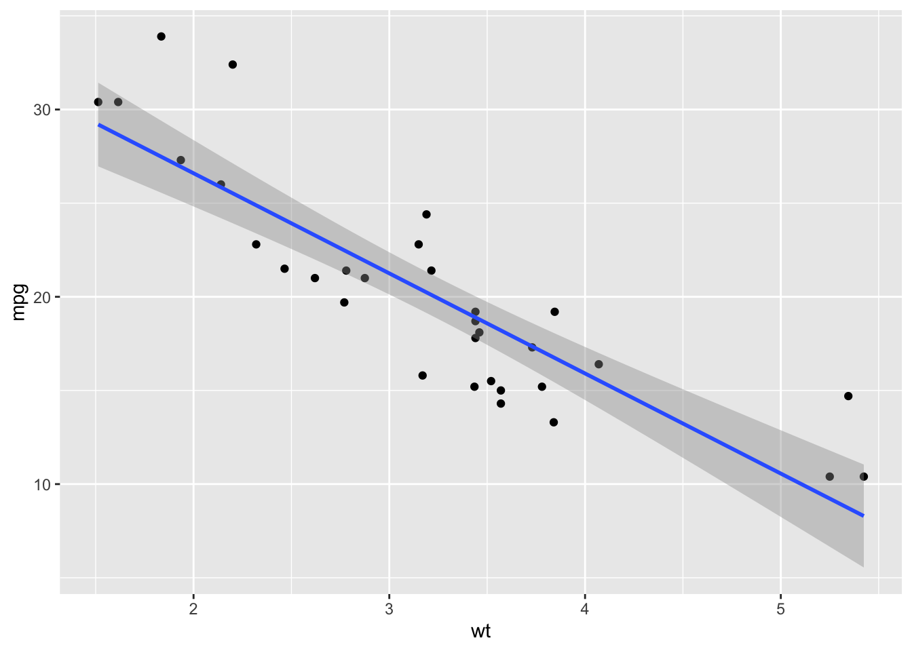
Lecture 16
This is an idealized representation of the data: \[ y = \beta_0+\beta_1x +\varepsilon; \]
There is some “true line” floating out there with a “true slope” \(\beta_1\) and “true intercept” \(\beta_0\);
With infinite amounts of perfectly measured data, we could know \(\beta_0\) and \(\beta_1\) exactly;
We don’t have that, so we must use finite amounts of imperfect data to estimate;
We are especially interested in \(\beta_1\) because is characterizes the association between \(x\) and \(y\), which is useful for prediction.
\(\beta_1\) is an unknown quantity we are trying to learn about using noisy, imperfect data. Learning comes in three flavors:
POINT ESTIMATION: get a single-number best guess for \(\beta_1\);
INTERVAL ESTIMATION: get a range of likely values for \(\beta_1\) that characterizes (sampling) uncertainty;
HYPOTHESIS TESTING: use the data to distinguish competing claims about \(\beta_1\).
We estimate \(\beta_0\) and \(\beta_1\) with the coefficients of the best fit line:
\[ \hat{y}=b_0+b_1x. \]
“Best” means “least squares.” We pick the estimates so that the sum of squared residuals is as small as possible. Play around!
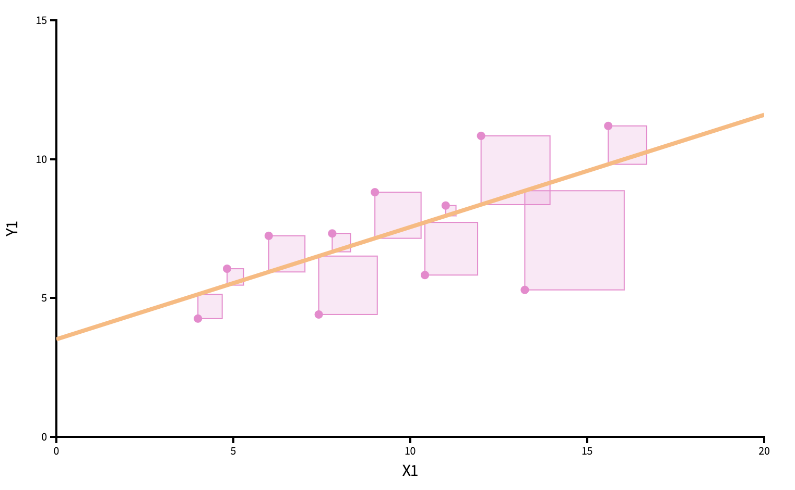
ggplot(mtcars, aes(x = wt, y = mpg)) +
geom_point() +
geom_smooth(method = "lm")`geom_smooth()` using formula = 'y ~ x'
linear_reg() |>
fit(mpg ~ wt, data = mtcars) |>
tidy()# A tibble: 2 × 5
term estimate std.error statistic p.value
<chr> <dbl> <dbl> <dbl> <dbl>
1 (Intercept) 37.3 1.88 19.9 8.24e-19
2 wt -5.34 0.559 -9.56 1.29e-10How do our point estimates vary across alternative, hypothetical datasets?
We can use the bootstrap to construct alternative datasets and assess the sensitivity of our estimates to changes in the data.
This histogram displays variation in the slope estimate across alternative datasets.
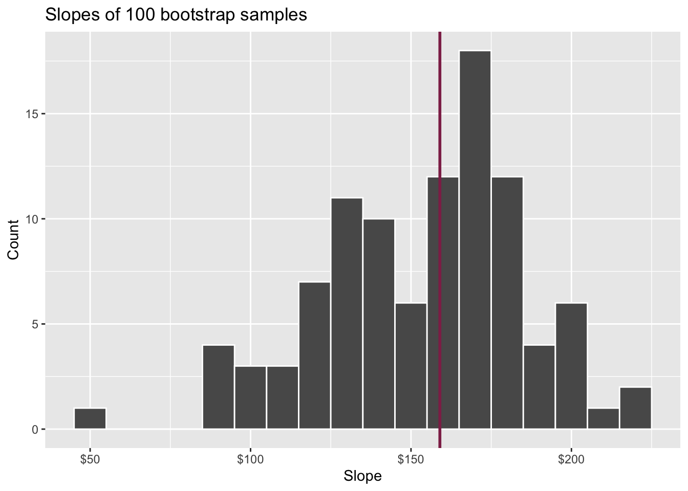
Pick a range that swallows up a large % of the histogram:
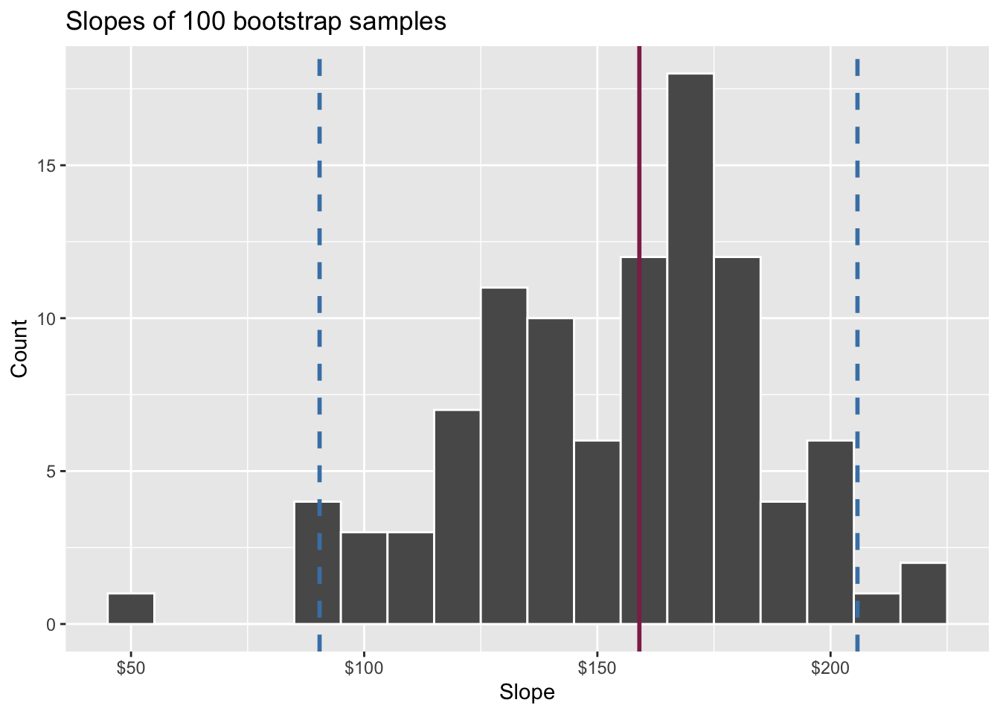
We use quantiles (think IQR) but there are other ways.
Two competing claims about \(\beta_1\): \[ \begin{aligned} H_0&: \beta_1=0\quad(\text{nothing going on})\\ H_A&: \beta_1\neq0\quad(\text{something going on}) \end{aligned} \]
In words: “are x and y correlated or not?”
Do the data strongly favor one or the other?
How can we quantify this?
Think hypothetically: if the null hypothesis were in fact true, would my results be out of the ordinary?
My results represent the reality of actual data. If they conflict with the null, then you throw out the null and stick with reality;
How do we quantify “would my results be out of the ordinary”?
If the null happened to be true, how would we expect our results to vary across datasets? We can use simulation to answer this:
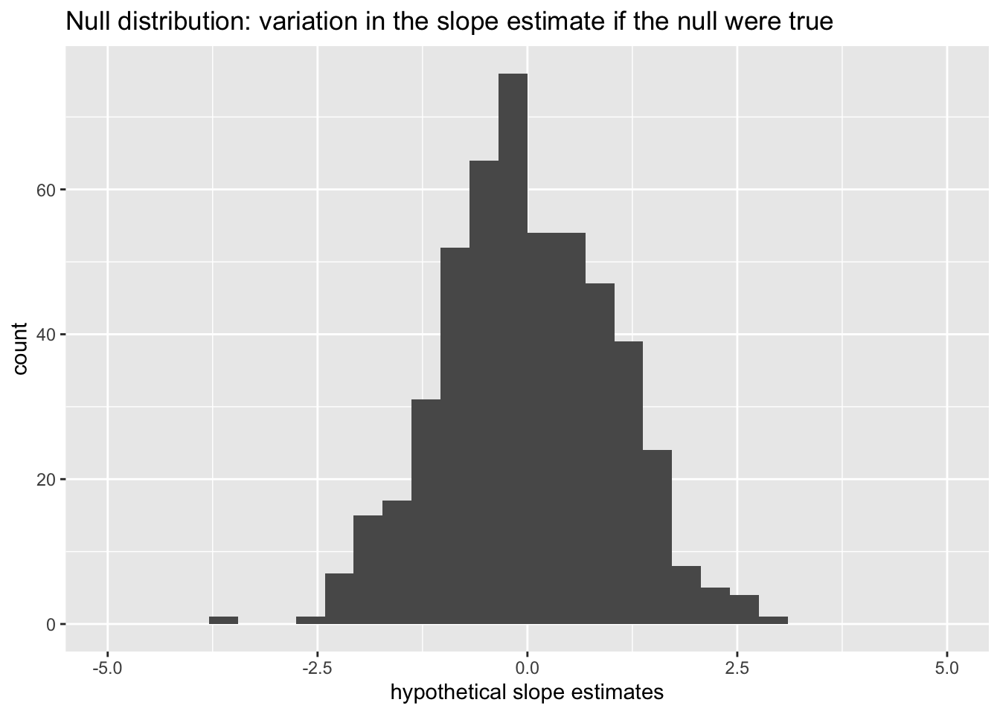
This is how the world should look if the null is true.
Locate the actual results of your actual data analysis under the null distribution. Are they in the middle? Are they in the tails?
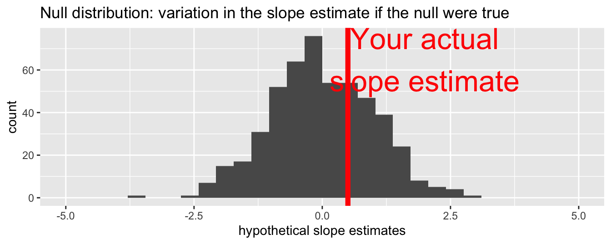
Are these results in harmony or conflict with the null?
Locate the actual results of your actual data analysis under the null distribution. Are they in the middle? Are they in the tails?
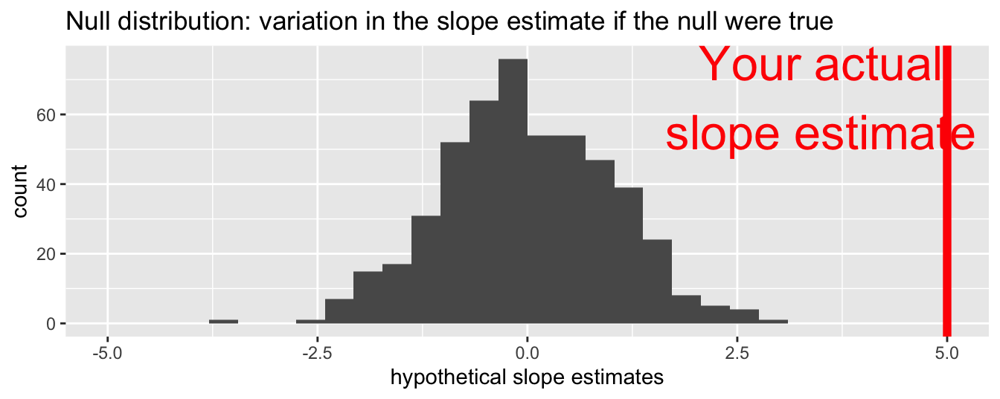
Are these results in harmony or conflict with the null?
Locate the actual results of your actual data analysis under the null distribution. Are they in the middle? Are they in the tails?
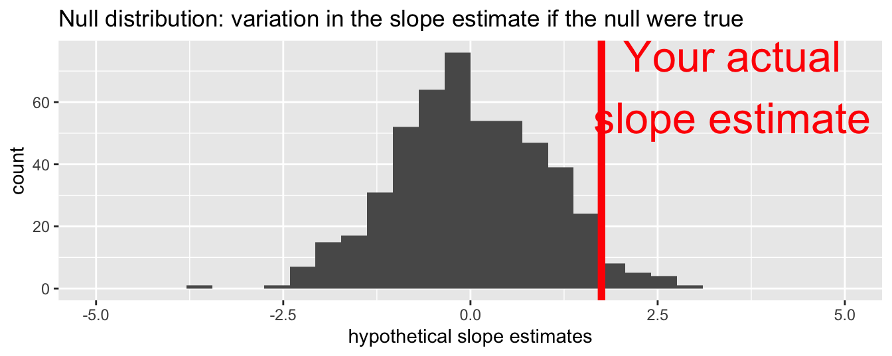
Are these results in harmony or conflict with the null?
The \(p\)-value is the probability of being even farther out in the tails of the null distribution than your results already were.
if this number is very low, then your results would be out of the ordinary if the null were true, so maybe the null was never true to begin with;
if this number is high, then your results may be perfectly compatible with the null.
p-value is the fraction of the histogram area shaded red:
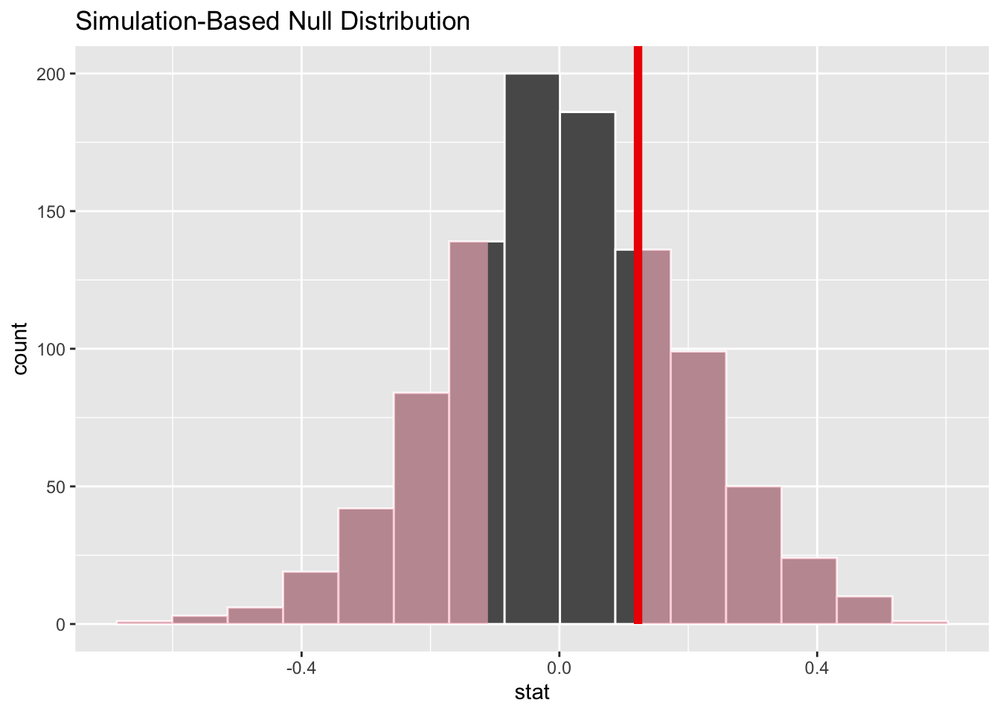
. . .
Big ol’ p-value. Null remains plausible
p-value is the fraction of the histogram area shaded red:
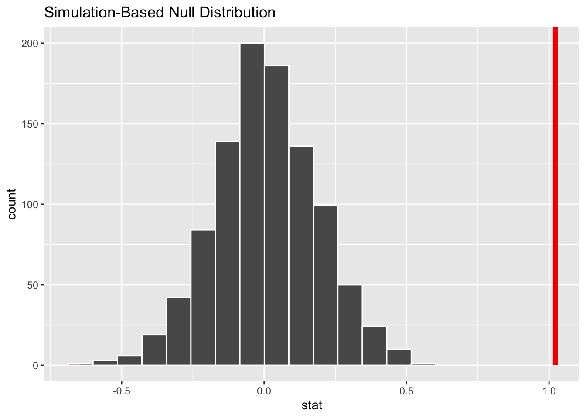
. . .
p-value is basically zero. Null looks bogus.
p-value is the fraction of the histogram area shaded red:
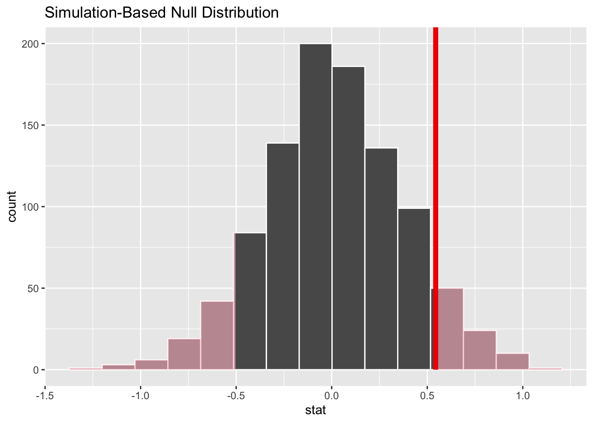
. . .
p-value is…kinda small? Null looks…?
How do we decide if the p-value is big enough or small enough?
Pick a threshold \(\alpha\in[0,\,1]\) called the discernibility level:
Standard choices: \(\alpha=0.01, 0.05, 0.1, 0.15\).
We will spend the month of November practicing the following: